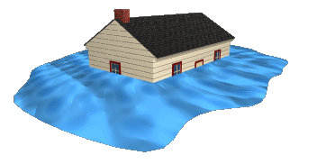

Humans cannot stop the rains from falling or stop flowing surface water from bursting its banks. These are natural events, but we can do something to prevent them from having great impact. Here are a few.
Sea / Coastal Defense Walls
Sea walls and tide gates have been built in some places to prevent tidal waves from pushing the waters up ashore. In some areas too, sand bags are made and placed in strategic areas to retain floodwaters.
Retaining walls
In some places, retaining walls levees, lakes, dams, reservoirs or retention ponds have been constructed to hold extra water during times of flooding.
Town planning
It is important that builders acquire permission before buildings are erected. This will ensure that waterways are not blocked. Also, drainage systems must be covered and kept free from objects that chock them. This way, water can quickly run through if it rains and minimize any chance of town flooding. Drainage systems should also be covered to prevent litter from getting into them.

Vegetation
Trees, shrubs and grass help protect the land from erosion by moving water. People in low-lying areas must be encouraged to use a lot of vegetation to help break the power of moving flood water and also help reduce erosion.
Education
In many developing countries, drainage systems are chocked with litter and people have little knowledge of the effects that can have during a rain. When it rains, waterways and culverts are blocked by massive chunks of litter and debris, and water finds its way into the streets and into people's homes. Education is therefore very important, to inform and caution people about the dangers of floods, what causes floods, and what can be done to minimize its impact.
Flood warning systems
Flood warning services are provided by the Bureau of Meteorology under its service level specification for flood forecasting and warning services.
The Department of Environment, Land, Water and Planning is working with local Councils, CMAs and Melbourne Water to evaluate appropriate flood warning services for at-risk communities where practical.